Вітаю, друзі! Жовтень у дорозі
Місяць видався насиченим, як і попередні: купа розмов і поїздок. Колись я дуже мріяв подорожувати, а тепер виходить, що вдома буваю дуже рідко. Ділюся історіями хлопців, з якими Бог звів мене цього місяця.
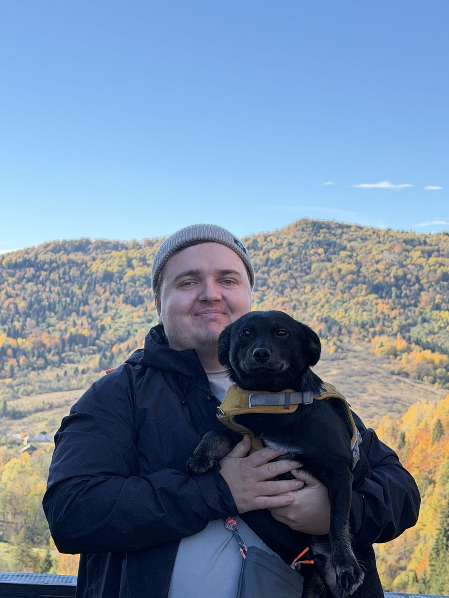
Коли ночую вдома, пес спить біля обличчя або ближче до серця. Сестра стала великим благословінням: сидить із ним, поки мене нема, і вони чудово порозумілися. Плату, щоправда, бере маком і жартує, що живе в мене більше, ніж я сам.
Ретрит у Словенії і Данік
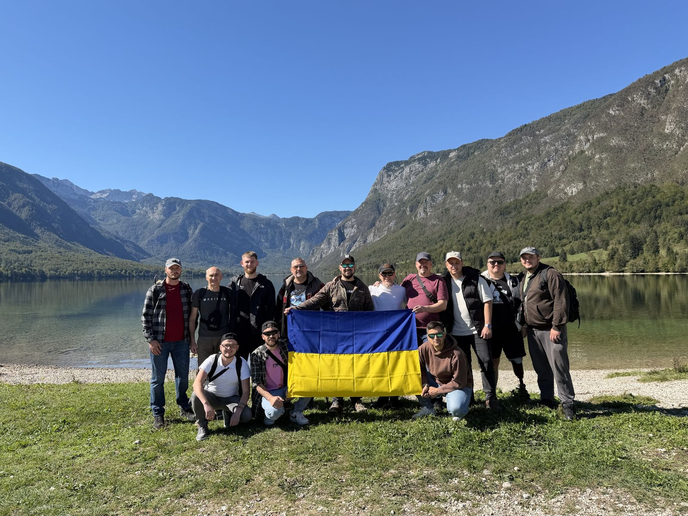
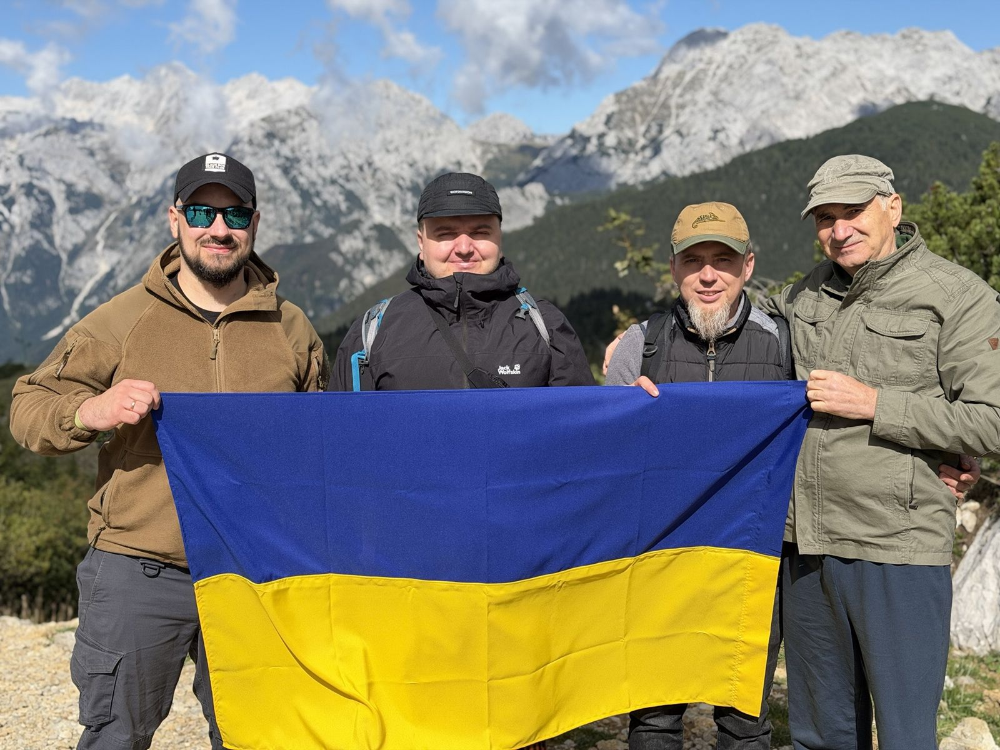
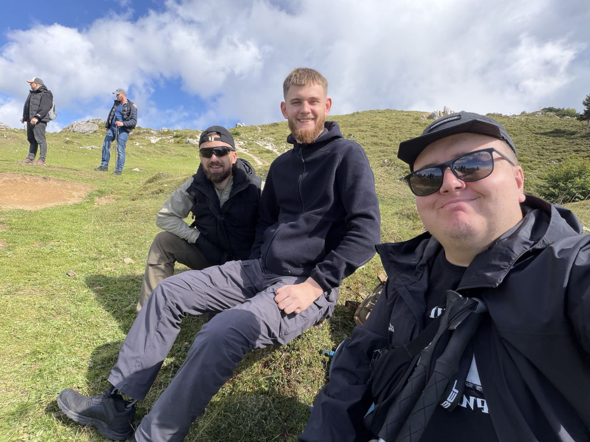
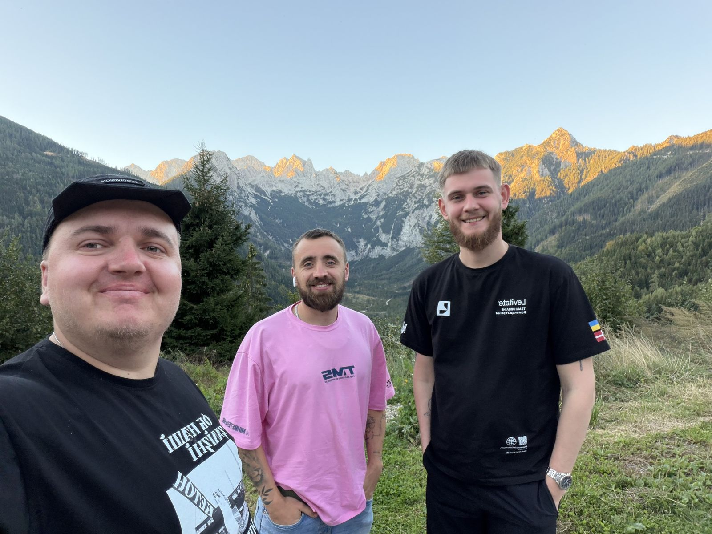
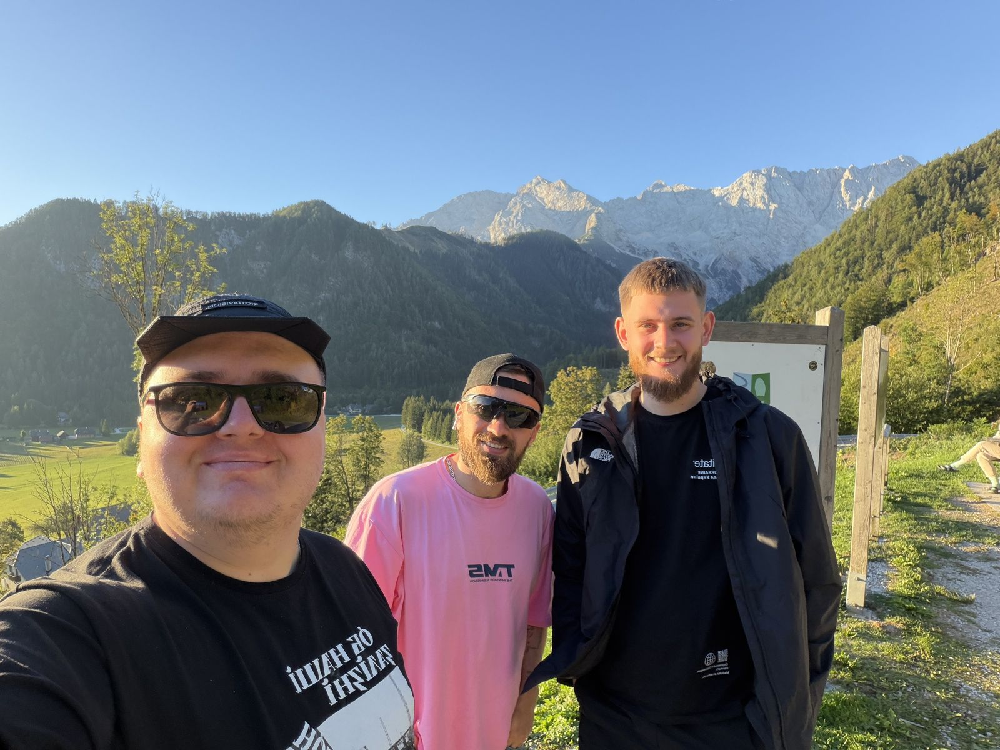
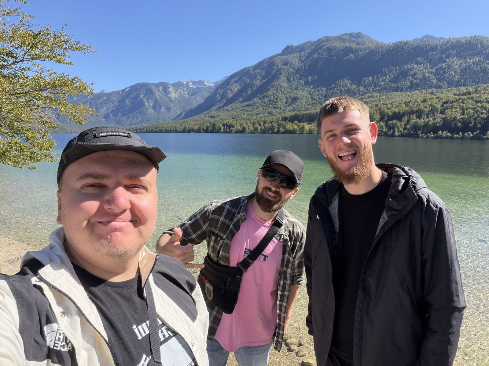
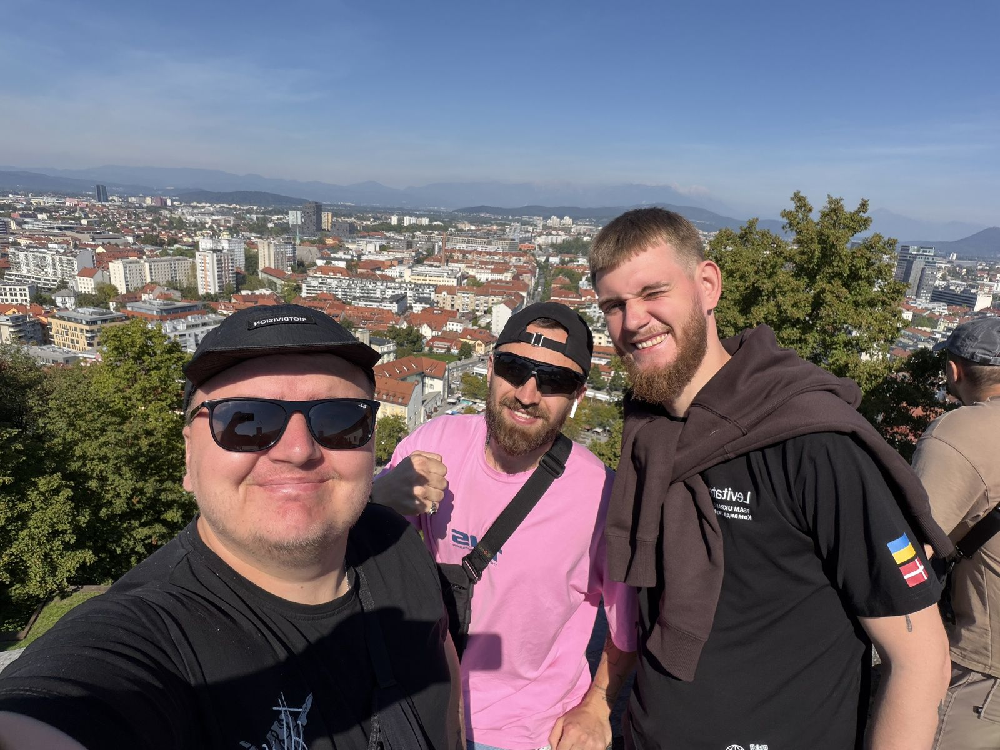
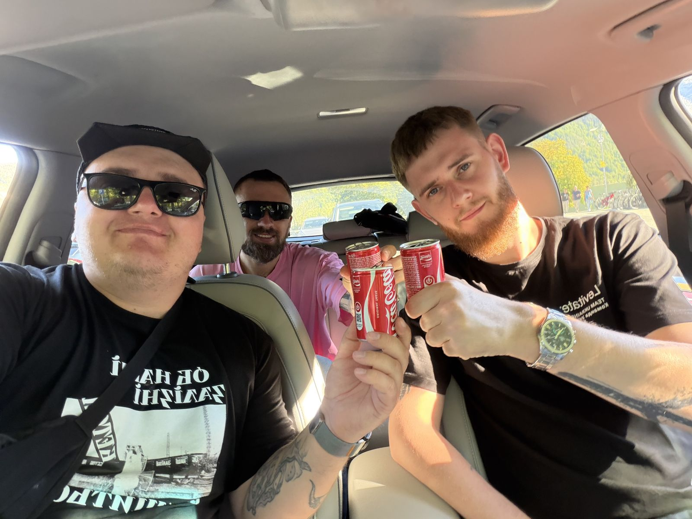
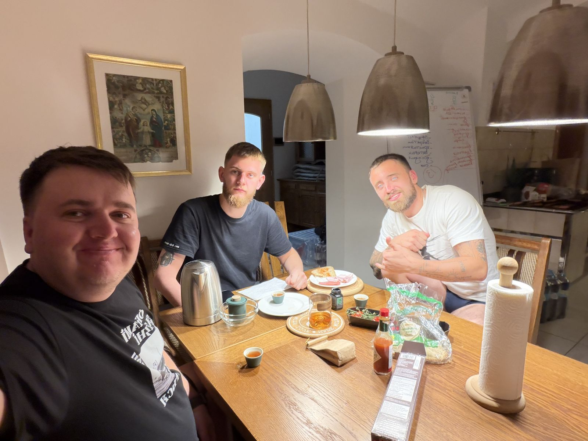
«Здіймаю я очі свої на гори, звідки прийде мені допомога? Допомога моя від Господа, що вчинив небо й землю!»
— Псалом 121:1–2
Цього місяця був ретрит у Словенії. Мені дуже подобається час у дорозі з хлопцями — це найкращий період для розмов (ніхто не втече).
У Словенії ми піднялися на вершину в горах: побули в тиші, випробували свої сили й багато говорили. Гори вміють відкривати те, що в місті лишається закритим.
Я продовжую залучати Даніка на різні ретрити й події, щоб він і далі міг ділитися своїм досвідом і чути думки інших. Не скажу, що Данік прям активно шукає Бога, але він чимало про Нього роздумує й молиться.
Він не відсторонюється від цієї теми. Взагалі дуже відкритий хлопець, готовий говорити практично про що завгодно. І я вдячний, що можу бути поруч у цьому процесі.
Історія Артура

«Ми звідусіль утискувані, але не потиснені; ми в важких обставинах, але не впадаємо в розпач; переслідувані, але не покинені; повалені, але не погублені»
— 2 Коринтян 4:8–9
У Словенії з нами був Артур. До служби у війську він був співробітником нашої місії. Зараз уже не в служінні, але так само відкрита людина з дуже цікавою історією.
У поїздці я дізнався більше про нього: про його розчарування і складнощі. Артур пройшов і досі проходить непростий шлях адаптації до цивільного життя. Він із сім'єю живе в Києві, вони мають власний бізнес (точніше, декілька) і попри складне становище продовжують жити це життя.
Щоб не розписувати тут усього: одразу після ретриту ми встигли записати з ним подкаст «Без броні», який дуже раджу послухати. І прошу — поширте його у своїх соцмережах.
Дивитися подкастІсторія Андрія
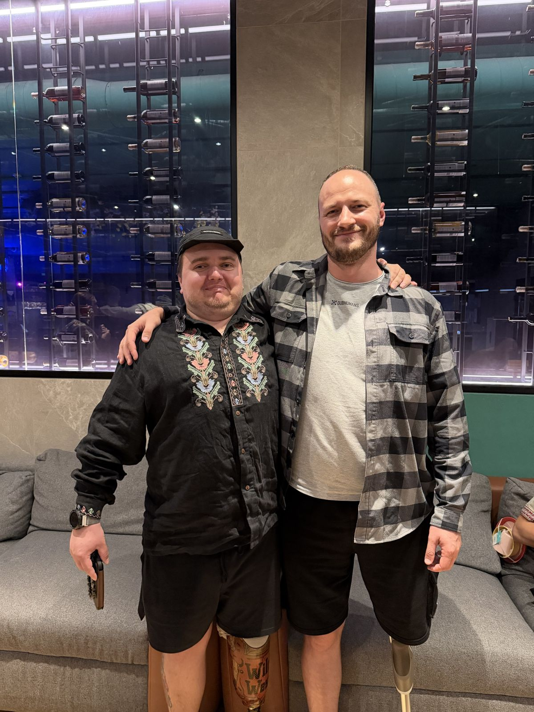
«Бог для нас охорона та сила, допомога в недолях, що завжди знаходиться»
— Псалом 46:2
У минулому листі я обіцяв розповісти про Андрія. Він був на ретриті в Буковелі, а тепер і в Словенії.
Андрій продовжує жити в Запоріжжі з батьками, попри постійні обстріли.
Відкритий і, як на мене, досить сором'язливий чоловік. Можливо, не надто красномовний, але відкритий говорити про Бога й досліджувати світ.
Після різних розмов із ним я щиро вдячний Богу за це знайомство.
Історії, які варто зберегти
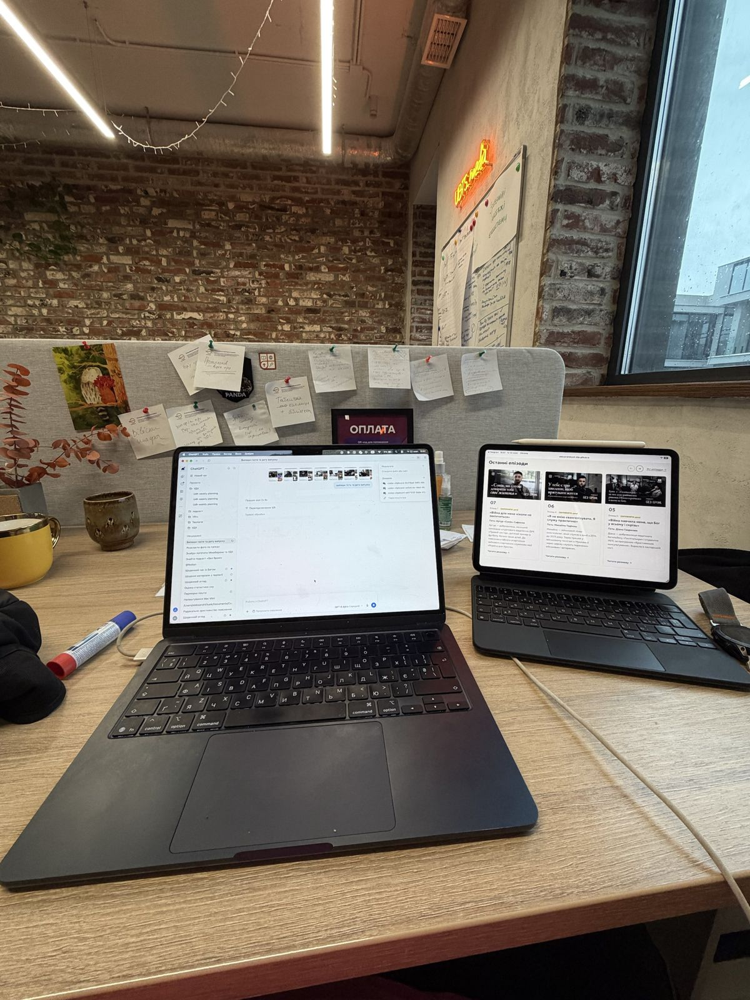
«…не сховаємо від їхніх синів, розповімо поколінню наступному славу Господню, і силу Його, і чуда Його, які Він учинив»
— Псалом 78:4
Розпитуючи людей навколо, ми помічаємо: в багатьох є певне почуття провини або небажання чути ці історії, бо це складно. Але я вірю, що їх варто зберігати — згодом вони зможуть послужити набагато більше.
Тому зараз переглядаю підхід. Подкастом ми охоплюємо не так багато людей та історій, а мені дуже хочеться охопити якомога більше. Хочу зафіксувати моменти, коли людина стикається з випробуваннями. У голові крутиться слово «справжніми», але в кожного свої справжні випробування, і знецінювати чужий досвід не хочеться.
І все ж я хочу зберегти досвід саме тих, хто дотичний до війни. Чому вони чинять так, а не інакше — як, наприклад, інший Андрій, з ЧМТ, про якого я писав минулого разу. Чи помічають вони в цьому втручання чогось надприродного (якщо не віруючі) або як бачать у цьому Бога (якщо християни). І як саме змінюється їхня віра в процесі.
Чесно кажучи, хотілося б якось зафіксувати й власний досвід. Але поки хочеться допомагати іншим, а до свого я ніяк не можу дійти.
Ще одна новина: ми зробили лендінг подкасту. Перекладу відео наразі немає, а мені дуже хочеться, щоб ці історії почули й поза Україною. Тому поки ми перевели всі випуски в текстову версію й переклали англійською. Усі 7 подкастів можна переглянути за посиланням.
Усі випуски «Без броні»Що ще було цього місяця
Польща. Устиг схопити там штраф, бо не знав, що з видимою інвалідністю я для них — не людина з інвалідністю. Як виявилося, це досить поширена проблема серед ветеранів, які потрапляють за кордон.
Нідерланди. Разом з Анною ми допомогли пригнати дві автівки для ЗСУ. Це трохи допомагає закривати почуття провини, що я не у війську. Але думки долучитися все одно час від часу приходять.
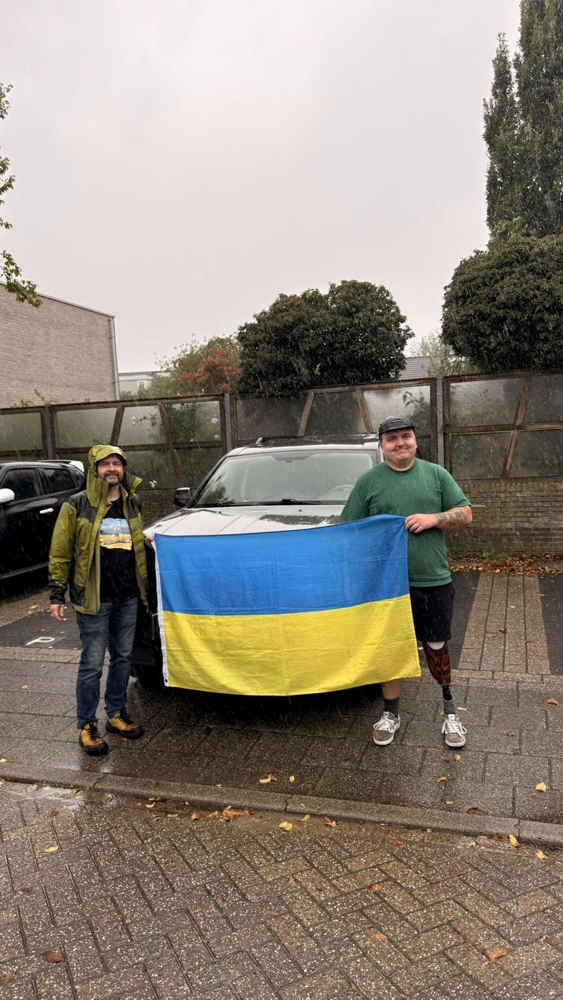
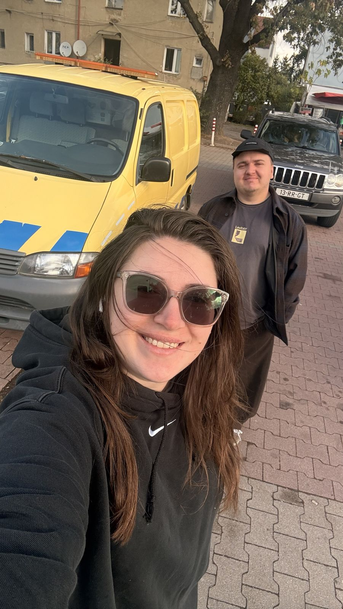
Стати партнером
Через усі ці поїздки я постійно відкладаю збір підтримки. Тим більше вдячний за вашу молитовну і фінансову підтримку — вона тримає мене в служінні й дає розуміння, що я поки на своєму місці.
Приват24 або Monobank
Рахунок IBAN (платіж за реквізитами):
UA063052990000026004045007863
Отримувач: Місія «Україна для Христа»
У коментарі до платежу обов'язково вкажіть мій номер у місії:
5544
Молитовні потреби
- •За Даніка — щоб його роздуми й молитви переросли в живу зустріч із Богом.
- •За Артура та його сім'ю — сили в адаптації до цивільного життя і зцілення від розчарувань.
- •За Андрія — Божий захист для нього й батьків у Запоріжжі.
- •За подкаст «Без броні» — мудрість у новому підході, щоб зберегти більше історій.
- •За мене — сміливість колись дійти до власної історії, мир щодо того, де мені бути зараз, і час на збір підтримки.
Дякую, що ви поруч у цьому служінні. Ваша підтримка відчувається навіть на відстані!
«Бог усякої потіхи, що потішує нас у кожній нашій скорботі, щоб змогли й ми потішати всіх, хто в усякій скорботі»
— 2 Коринтян 1:3–4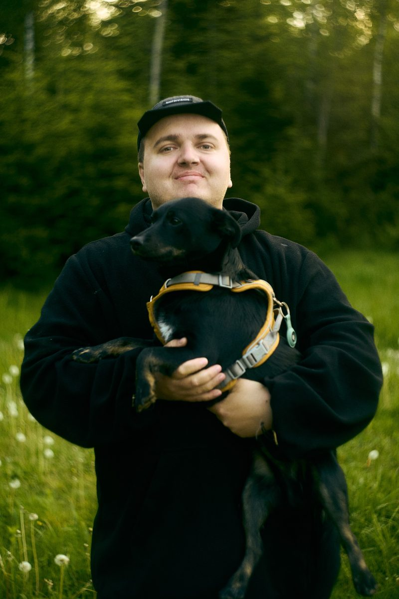
Олександр Килюшик
З благословенням у Христі
Служіння серед військових · Місія «Україна для Христа»